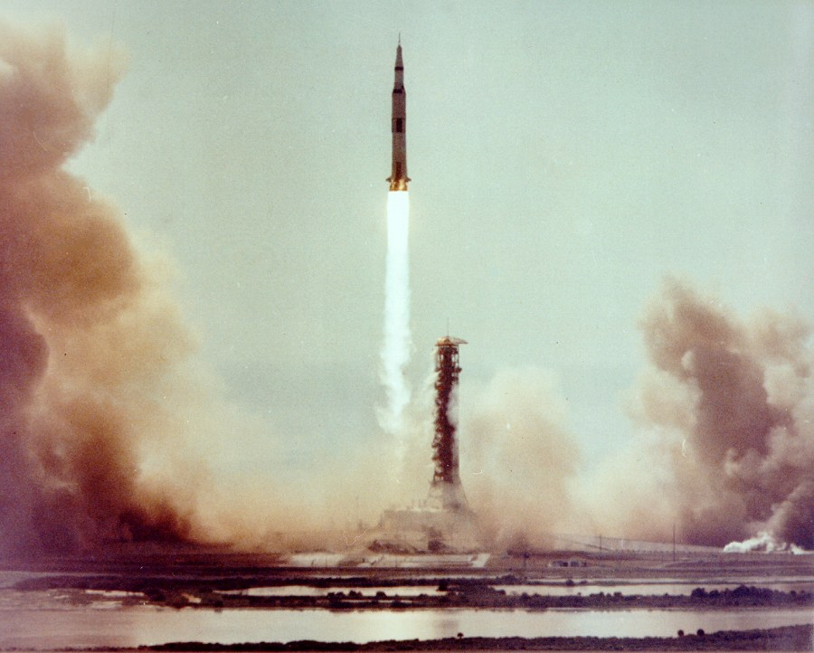

A small guide to the Apollo missions
Space exploration is easier to understand one mission at a time. These notes look at the steps that led to the first crewed Moon landing.
Why explore space?
Space missions let us study places we cannot visit in everyday life. Apollo is especially interesting because each flight tested something needed by the next crew.
- Learn about the Moon by studying rocks and surface measurements.
- Test how people and equipment work beyond Earth.
- Develop better ways to navigate and communicate over long distances.

How to follow a mission
I find it useful to start with the mission's purpose, then follow its journey and results.
- Find out what the mission was trying to achieve.
- Read about the crew and spacecraft.
- Follow the launch, main events and return to Earth.
- Compare the results with the original goal.

Continue with the Apollo 11 story and mission table.